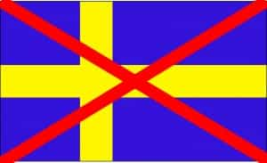

< < < Back
Sweden Showcases The War Of Two Nationalist Narratives – Return Of Kings
There is a war going on between two national narratives in Scandinavia and other European countries. In Sweden, the central question is how to define “Swedishness,” what it means to be Swedish, and if it’s possible to define the term at all. The subject has popped up in debates from time to time, at least in the past fifteen years.
As the big nationalistic party, the Sweden Democrats, has gained more and more support, so has the topic of Swedishness climbed higher on the political and cultural agenda. The recent migrant crisis has pushed nationalistic ideas and parties to the forefront all over Europe. The political polarization seems to increase as more and more migrants enter what was in a not-too-distant past quite homogeneous societies.
Exclusive vs. inclusive
The two narratives are both nationalistic in the sense that they attempt to define what the particular nation is, what it stands for and how it differs from other nations. They are mutually exclusive, with one being excluding and the other being including. One focuses on the historical and cultural roots of the nation, the other advocates immigration and multiculturalism.
While normally we attribute the first to the political right and the other to the left, the distinction is not always that simple to make. The nationalistic Sweden Democrats is now the biggest party among working class voters, taking the place held for so long by the Social Democrats. Blue-collar workers have shown themselves to be surprisingly conservative.
Jimmie Åkesson’s nationalistic party, the Sweden Democrats, seems bound to become the biggest party in Sweden.
Proponents of inclusive nationalism say Sweden should be a country of openness and tolerance. Another word they like to use is solidarity, meaning that the affluent Swedes must aid the people who suffer around the world. As the world becomes increasingly globalized, the socialist idea of caring for the weak and downtrodden in society is being applied also to people living beyond the Swedish borders.
In the US, some say that America is a nation of immigrants. Therefore it’s un-American to be against immigration in any way. It’s nonsense, of course, since the mostly European migrants that made America what it is today arrived a long time ago. In Sweden it would be even more nonsensical for someone to claim such a thing, so no one does.
But they present other reasons for why immigration is such an important aspect of Swedishness. It’s morally wrong to keep people out who have done nothing wrong. And not helping someone you know is suffering is even worse. It’s thoroughly un-Swedish to be selfish at all.
Everything can be Swedish

But what’s also significant in this inclusive narrative is the idea that Swedishness is constantly changing and infinitely malleable, like a pot of clay that will never solidify. That means whatever people do or think within the Swedish borders is what constitutes Swedishness. Since Swedishness is in transition, the very proposition that there exists a particular Swedish ethnicity that can be preserved over time is met with accusations of racism and xenophobia. It’s seen as a dog whistle for white supremacists. After all, if a black person moves to Sweden, being black is also included in the definition of Swedishness.
The other national narrative, the one which some would call exclusive, see the clay pot of Swedishness as solid but fragile. It must be kept protected lest it will break and disappear, its fragments being discovered years from now by archaeologists and examined as remains of a long-lost culture.
That is why you’ll hear some of these nationalists proclaiming “Sweden for the Swedes!” In the end, it’s a matter of survival. And who can blame someone who’s proud of his heritage for wanting to pass it on to future generations?
A Swedish ethnicity actually exists, say proponents of exclusive nationalism. It consists of components like a common language, religion, traditions, values etc. It’s what Swedes are used to and something they don’t even notice until they encounter cultures that are far different.
And that leads into another point—multiculturalism doesn’t work. Different peoples will experience difficulties in cohabiting the same country. A better solution would be that every ethnicity had its own state in which people who share the same culture can live together. A society like that would be more stable than one with a mix of peoples who don’t trust or understand each other, and whose goals are opposing.
Flawed but growing
Marine Le Pen’s National Front won in six of mainland France’s twelve regions in the first round of the recent elections.
Both types of nationalism have their flaws. The exclusive kind, inevitably isolationist to some extent, seems out of touch with the current globalizing trend where communication, relationships and trade become globally integrated. Minorities also tend to be treated badly in these kinds of societies. The wars and genocides of the 20th century are reminders of what can happen when one ethnic group claims superiority and hegemony over others.
In the case of inclusive nationalism, on the other hand, there is a naive and unrealistic notion that people from different cultures will get along fine. Instances of terrorism and the failure of integrating immigrants into Western societies showcase the difficulties at hand. It is also common in multicultural societies that minorities receive privileges and are treated as protected groups, while the dominant group is denied equal rights. Hate speech laws practically forbid any utterance that might offend groups deemed “oppressed.”
Borders are trending once again
One thing is for certain: nationalism will not die out any time soon. These days, exclusive nationalism seems to be gaining ground all over the map. It is and will continue to be fueled by the migrant crisis for as long as it lasts. Borders are being erected once again between the European countries, and the discontent with the EU is growing. Soon the British might decide to leave the union, and if they do, others might follow.
Even if the flood of immigrants can be halted, many of them have already come, and their presence will be a strain on the national economy as well as the relationship between groups of citizens. The “Old Swedes” will see their country changed by the “New Swedes” and doubt if it’s for the better.
Balkanization will make natives turn to the exclusive type of nationalism for security, as they see the social cohesion of their formerly homogeneous country deteriorate. Inclusive nationalism will receive pushback as its flaws become all too apparent.
Read More: The Final Verdict On Swedish Girls